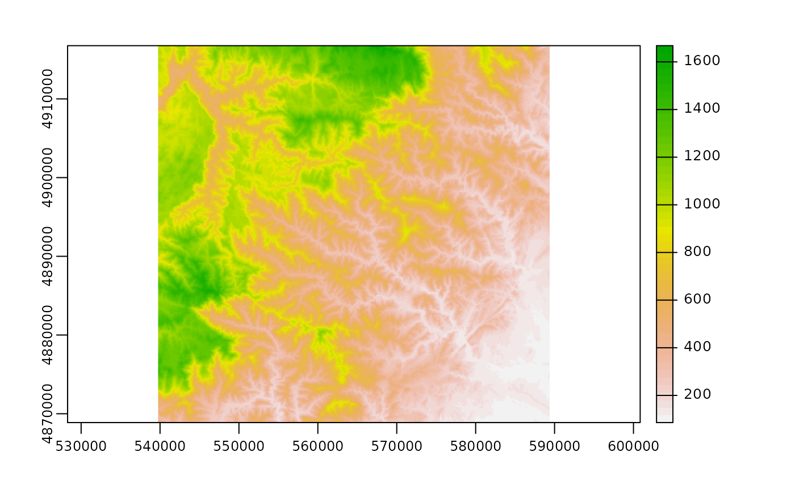

projection_along_profiles.RmdWe load a number of packages that will be used
We load and reproject a Digital Elevation Model over the Cévennes area in SE France.

First we can define the trace of the profile (using the coordinates of the start and end points), the width w_buf and plot the corresponding buffer.
# start (1) and end (2) points of the projection line
x1 = 583695
y1 = 4875921
x2 = 550939
y2 = 4907255
w_buf = 5e3 # width
# projection line
l1 = terra::vect(matrix(c(x1,y1,x2,y2),ncol =2,byrow=T),
type="lines",crs=crs(dem))
# swath
bf = terra::vect(st_buffer(st_as_sf(l1),dist=w_buf,
endCapStyle = "FLAT",joinStyle = "ROUND"))
plot(dem)
lines(l1)
lines(bf,lty=2)Then we project the DEM data along the profile, using swath_profile function. We will use inc bins along the profile.
inc = 100 # number of bins along the profile
data = swath_profile(dem,x1,y1,x2,y2,w_buf,100) # computation of the swath profileThe output is the following table with 100 rows, containing the basic statistics for each bin.
datatable(data)We can then plot the profile.
plot(data$distance/1000,data$mean,type="l",lwd=3,ylim=range(data$min,data$max),xlab="Distance along profile (km)",ylab="Elevation (m)")
lines(data$distance/1000,data$mean+data$sd)
lines(data$distance/1000,data$mean-data$sd)
lines(data$distance/1000,data$min,lty=2)
lines(data$distance/1000,data$max,lty=2)